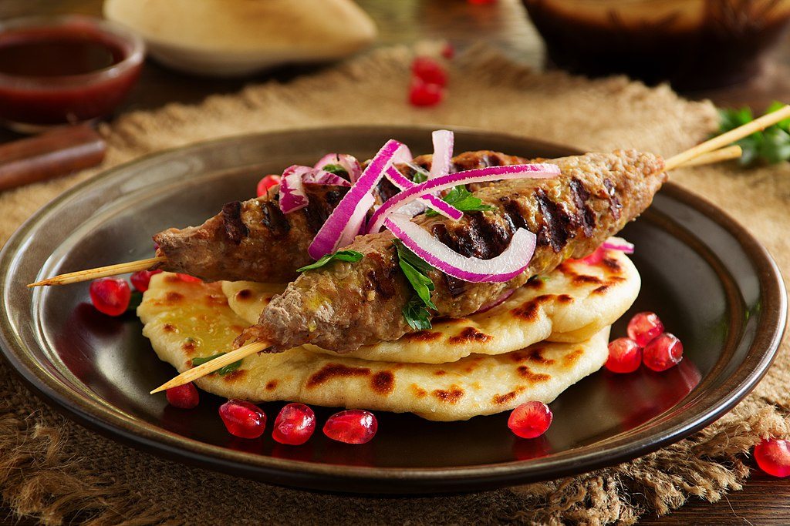
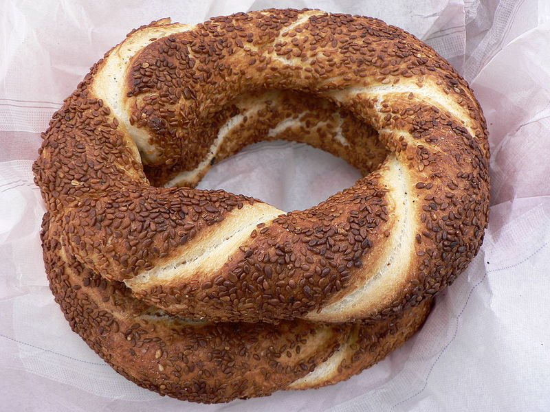
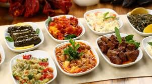
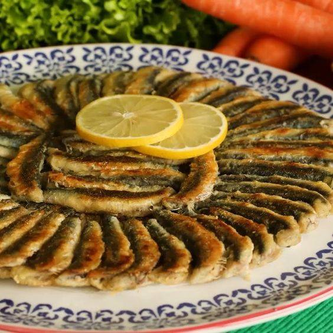
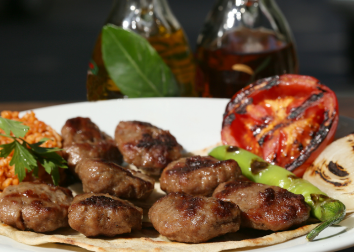

Kebap
Kebapul este un preparat emblematic al Turciei, care poate fi găsit în diverse variante în Istanbul. Carnea de miel sau de vită este marinată și gătită la grătar, servită cu legume și orez sau pâine pita.

Baklava
Un desert dulce și crocant, făcut din foi subțiri de aluat, nuci sau fistic și îmbibat cu sirop de zahăr sau miere. Baklava este un simbol al tradiției turcești și o delicatesă care nu trebuie ratată în Istanbul.

Simit
Simitul este o pâine turcească rotundă, acoperită cu semințe de susan. Este o gustare populară pe care o poți găsi la fiecare colț de stradă din Istanbul, adesea servită cu ceai turcesc.

Meze
Mezele sunt aperitive turcești, care includ o varietate de salate, legume marinate, brânzeturi, sau carne la grătar. Acestea sunt servite adesea într-o masă comună, iar fiecare persoană își alege ce vrea să guste.

Hamsi
Hamsi este un pește mic, tipic regiunii Mării Negre, dar foarte popular și în Istanbul. Este gătit fie prăjit, fie la grătar, fiind servit adesea cu lămâie și ceapă.

Köfte
Köfte sunt chiftele turcești, făcute din carne tocată, de obicei de vită sau miel, amestecată cu condimente și ierburi aromatice. Se servesc cu orez sau pâine și sunt extrem de gustoase.
